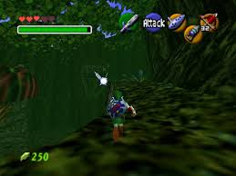
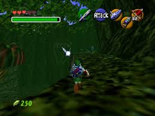

Zelda: Ocarina of Time es un videojuego de acción y aventura desarrollado por Nintendo para la consola Nintendo 64. Fue lanzado en 1998 y es ampliamente considerado como uno de los mejores videojuegos de todos los tiempos.
 

Requisitos del sistema: Sistema operativo: Windows 10 o superior de 64 bits. Procesador: Procesador con dos núcleos y cuatro hilos. Memoria RAM: Mínimo 4 GB, pero se recomiendan 8 GB o más si utilizas gráficos integrados, para mejorar el rendimiento. Gráficos: Tarjeta gráfica compatible con DirectX 11 u OpenGL 3.3. Almacenamiento: Se necesita espacio para la compilación del juego y la ROM del juego. Software adicional: Se requiere un programa de compilación (como Blayer Foxtrot 9.0.5) y una copia de la ROM del juego de Nintendo 64.